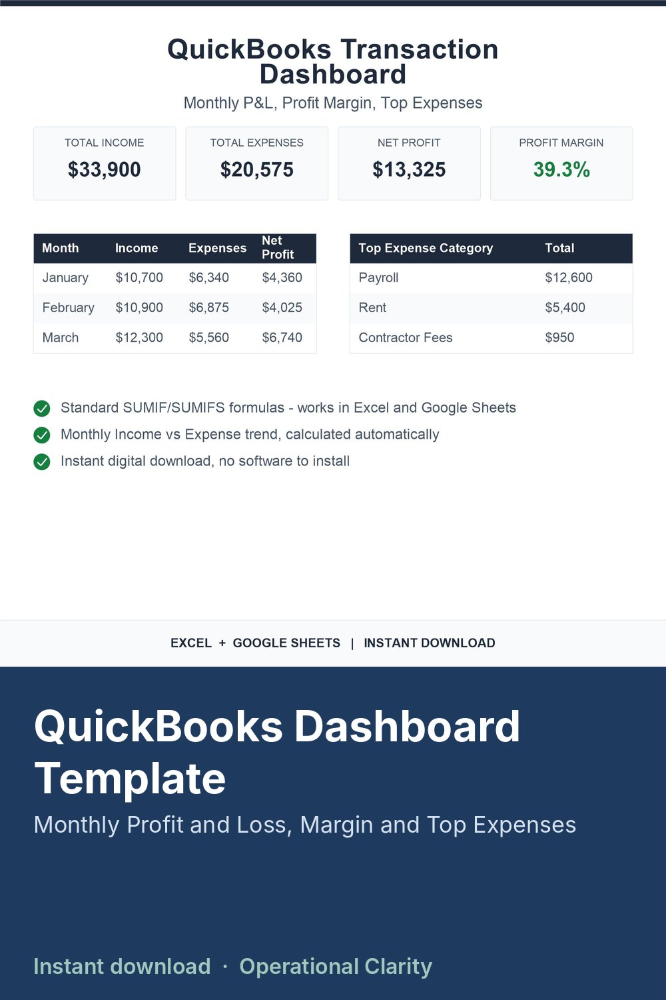

QuickBooks Dashboard Template

QUICKBOOKS TRANSACTION DASHBOARD (INSTANT DOWNLOAD)
Turn a simple transaction export into a clean monthly Income vs Expense dashboard-automatically. See your profit margin, monthly trends, and top expense categories at a glance, without touching a single pivot table.
Best for: small business owners, freelancers, bookkeepers-anyone who wants a fast visual read on their QuickBooks numbers without learning QuickBooks' built-in reports.
What this system does (built into the file):
- Turns transaction-level data into a monthly Income vs Expense summary
- Calculates Net Profit and Profit Margin automatically
- Ranks your top expense categories, highest to lowest
- Updates automatically as you add more transactions
Includes (1 file):
QuickBooks Transaction Dashboard spreadsheet (.XLSX)
How to use (inside the file):
Open the START HERE tab for the exact setup steps:
1. Export your transactions (Date, Category, Type, Amount)
2. Paste into the TRANSACTIONS tab
3. Go to the DASHBOARD tab - everything updates automatically
Compatibility:
Works in Excel (.xlsx). You can also upload the file to Google Drive and use it in Google Sheets. All formulas are standard SUMIF/SUMIFS - no Google-only functions, so nothing breaks when opened in Excel.
License:
Personal / single-business use only. No reselling, sharing, or redistribution (including modified versions).
Digital item notice:
This is a digital download. No physical product will be shipped.